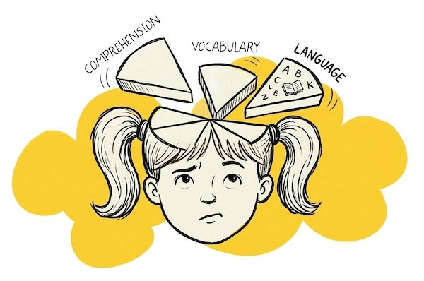
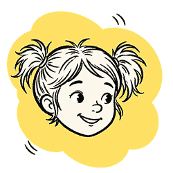
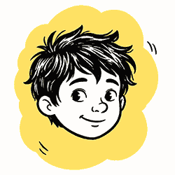
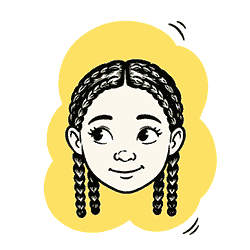
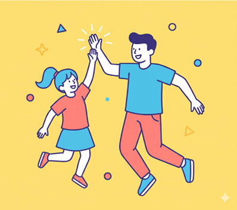

01
Read
Colour-coded syllables and line focus help children crack words instead of guessing them.
Lesefuchs
German reading coach made for kids
Improve your child's reading skills. Smartmeister reads aloud, colours syllables and checks understanding. Your child can replay a tricky word or see its translation and keep practising when you can't sit beside them.
The reading gap is real and growing.
1 in 4
fourth graders in Germany can't read at a basic level.
IGLU 2021
1 in 3
children are rarely or never read to at home.
Stiftung Lesen, Vorlesemonitor
10–15 min
of guided daily practice boosts fluency, comprehension, pronunciation and vocabulary.
That's where we come in
Every action keeps children on the reading track: replay the sentence, translate a word, listen to syllable-pronunciation, answer questions about the story.
Removing the grind for those with reading difficulties
Colour-coded syllables and line focus help children crack words instead of guessing them.
Lesefuchs
Whole texts, single sentences or one word – read aloud clearly, and slowly when needed.
Short quizzes, read aloud too, show what they understood. Unknown words translate in one tap.
Who does the fox meet?
Read and listen along, then practise comprehension. Children start easy and climb the difficulty ladder steadily. Reading difficulty evolves with your child at their level.
A small taste of the Smartmeister reader. Switch the reading helpers on and off – just as children can in the app.
Story · Grade 2
Der kleine Fuchs
Tap any word to hear it and see its meaning.
English
Quick check
Wen trifft der Fuchs heute?

These are the moments Smartmeister is built for:
Slowly stumbling letter by letter, avoiding reading aloud
Reading, but not getting it – all the energy goes into decoding.
Mixing up letters, skipping syllables or making words up.
One tap: spoken aloud, meaning in their home language.
Syllable colours show how it's built; friendly letters keep b/d and p/q apart.
Slow mode, bigger pauses, replay of any part. Syllable-pronunciation.
The current line lights up; the rest fades back.
Quick quizzes, read aloud too, show what really stuck.
Easy-use reading helpers and difficulty adapt to reading ability.



“As multilingual parents, we can never be 100% sure we're pronouncing everything right, let alone explaining what a word really means. Smartmeister gives us the certainty our kids don't miss out because of us.”
Research agrees: With regular practice fluency + understanding develop together. Short sessions of around 10–15 minutes result in 20% better on reading comprehension tests than kids following traditional tracks.
1 in 4
fourth graders in Germany do not reach the minimum reading standard.
IGLU 2021
1 in 3
children are rarely or never read to at home.
Stiftung Lesen, Vorlesemonitor
General research findings in Germany (not measured with Smartmeister)
Developed with teachers & learning therapists.
120+ families already joined
